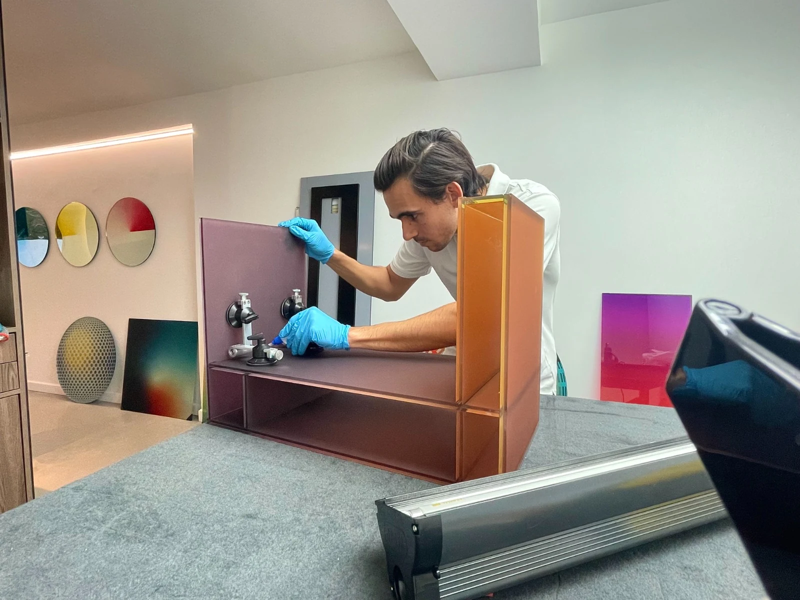
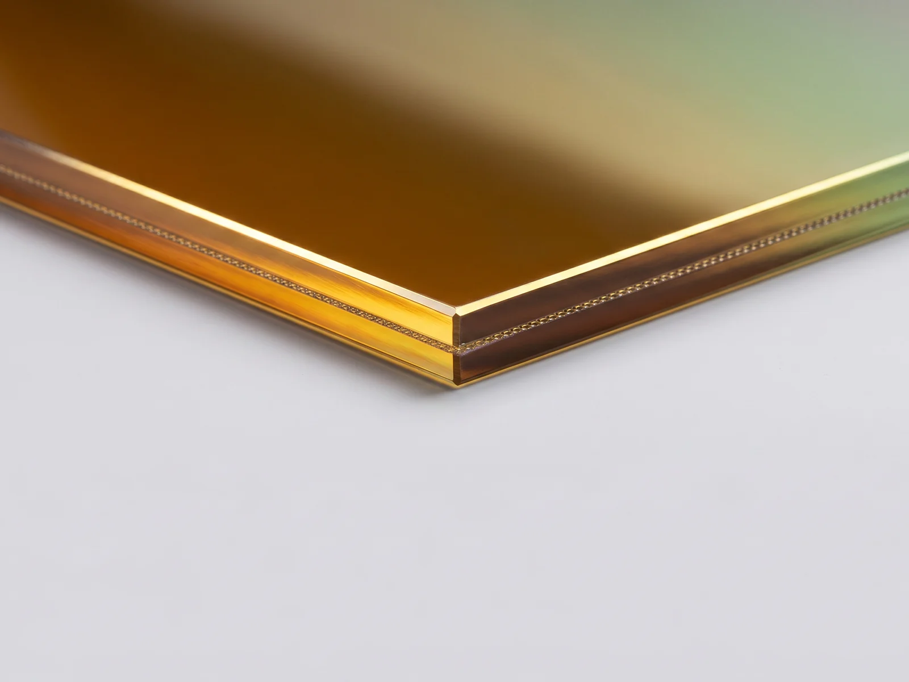
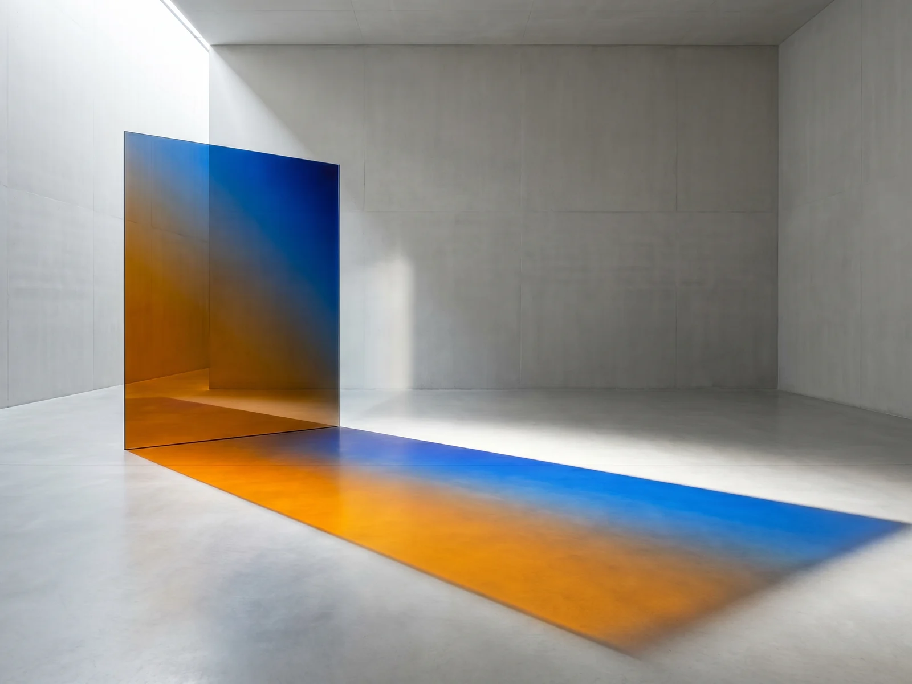
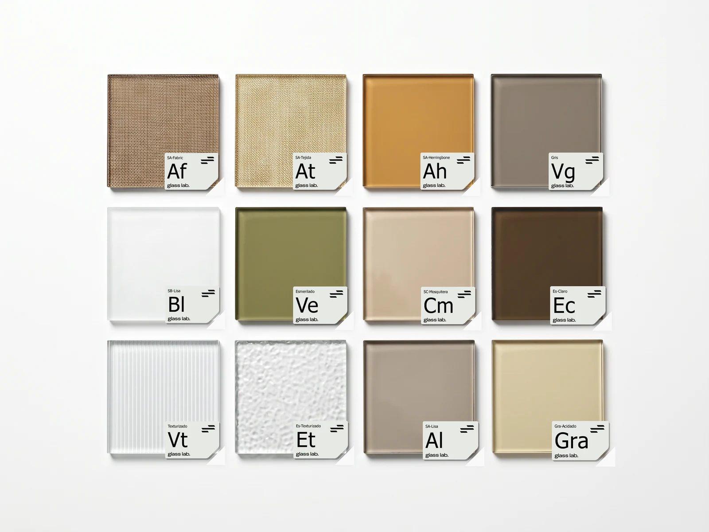

“Working with Glass Lab on Restaurante Maito was a great experience. They helped us with all the bathroom mirrors and some reeded glass doors…”
Monica Fonseca
Restaurante Maito · Google review
Glass is not a product. It is a system of depth, texture and light. Each type is processed through objective data and assessed against sensory criteria.
Our founding principle. The reason the laboratory exists.
Absence used as structure. Depth defined by what is not there.
Explore the catalogue →Why is architectural glass treated as an ordinary material when its expressive potential is limitless? Founded in Panama City in 2019, Glass Lab began as a personal sample archive and became a classification system that today covers more than 50 types of glass.


We analyse light transmission, reflection and colour behaviour at different angles and colour temperatures. The result is a technical sheet that translates materials science into the language of architecture. Before entering the catalogue, each sample goes through kiln recipe tests, insert behaviour with different types of EVA and edge polishing with insert, among others.
We work with architects, interior designers and developers to bring glass in as a design element, not just as an enclosure. Our manufacturing network spans suppliers in the Americas, Europe and Asia, giving us access to processes that do not exist in the local market.

Layer by layer · millimetre by millimetre
We identify the right glass according to the project's technical, aesthetic and budget requirements.
We define the configuration of layers, interlayers, finishes and treatments to reach the performance required.
We coordinate the production process, safeguarding quality and lead times.
Final quality control, packing, logistics and installation with on-site supervision.


“Not as a factory, but as a laboratory of possibilities. Glass has a language we have not finished exploring.”
An architect by training, Guillermo built Glass Lab out of a personal sample archive that now exceeds 50 classified, tested and documented types. His obsession is not glass as an ordinary material but glass as an expressive one — with a geometry of its own, colour behaviour that never repeats, and a physical presence that transforms the space holding it.
Alongside the laboratory, he runs Pernia Glass — the architectural systems line that turns catalogue materials into installable products. Sliding doors, partitions and façades made in Panama to an international standard.
“Working with Glass Lab on Restaurante Maito was a great experience. They helped us with all the bathroom mirrors and some reeded glass doors…”
Monica Fonseca
Restaurante Maito · Google review
“I have worked with GlassLab for over a year and the experience has been excellent. Their advice, quality and attention to detail are first rate.”
Erik De Almeida Da Rocha
Google review
More than 50 types of glass classified, documented and available for your next project.